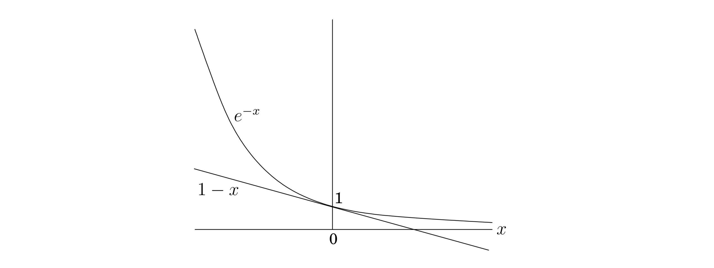

The dots in Figure 5.11 represent a collection of towns. This county is in its early stages of planning and is deciding where to put schools. There are only two constraints: each school should be in a town, and no one should have to travel more than \(30\) miles to reach one of them. What is the minimum number of schools needed?
Figure 5.11 (a) Eleven towns. (b) Towns that are within \(30\) miles of each other.
This is a typical set cover problem. For each town \(x\), let \(S_x\) be the set of towns within \(30\) miles of it. A school at \(x\) will essentially "cover" these other towns. The question is then, how many sets \(S_x\) must be picked in order to cover all the towns in the county?
\(\text{Set Cover}\)
input: a set of elements \(B\); sets \(S_1, \ldots, S_m \subseteq B\).
output: a selection of the \(S_i\) whose union is \(B\).
cost: number of sets picked.
In our example, the elements of \(B\) are the towns. This problem lends itself immediately to a greedy solution:
Repeat until all elements of B are covered:
Pick the set S_i with the largest number of uncovered elements.This is extremely natural and intuitive. Let's see what it would do on our earlier example: It would first place a school at town \(a\), since this covers the largest number of other towns. Thereafter, it would choose three more schools—\(c, j,\) and either \(f\) or \(g\)—for a total of four. However, there exists a solution with just three schools, at \(b, e,\) and \(i\). The greedy scheme is not optimal!
But luckily, it isn't too far from optimal.
Claim Suppose \(B\) contains \(n\) elements and that the optimal cover consists of \(k\) sets. Then the greedy algorithm will use at most \(k \ln{n}\) sets.1
Let \(n_t\) be the number of elements still not covered after \(t\) iterations of the greedy algorithm (so \(n_0 = n\)). Since these remaining elements are covered by the optimal \(k\) sets, there must be some set with at least \(n_t / k\) of them. Therefore, the greedy strategy will ensure that \[n_{t + 1} \leq n_t - \frac{n_t}{k} = n_t (1 - \frac{1}{k}),\]
which by repeated application implies $n_t ≤ n_0 (1 - )^t. A more convenient bound can be obtained from the useful inequality \[1 - x \leq e^{-x} \ \ \text{for all $x$, with equality if and only if $x = 0$,}\]
which is most easily proved by a picture: 
Thus \[n_t \leq n_0 (1 - \frac{1}{k})^t < n_0 (e^{-1 / k})^t = ne^{-t / k}.\]
At \(t = k \ln{n}\), therefore, \(n_t\) is strictly less than \(n e^{-\ln{n}} = 1\), which means no elements remain to be covered.
The ratio between the greedy algorithm's solution and the optimal solution varies from input to input but is always less than \(\ln{n}\). And there are certain inputs for which the ratio is very close to \(\ln{n}\) (Exercise 5.33). We call this maximum ratio the approximation factor of the greedy algorithm.
There seems to be a lot of room for improvement, but in fact such hopes are unjustified: it turns out that under certain widely-held complexity assumptions (which will be clearer when we reach Chapter 8), there is provably no polynomial-time algorithm with a smaller approximation factor.
\(\ln\) means "natural logarithm," that is, to the base \(e\).↩